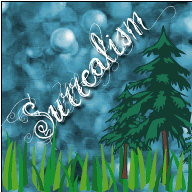
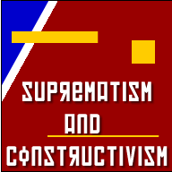

Orientation in Art Deco & de Stijl
Origin
 After WW1, Art Deco emerged in a society that sought to return to normalcy. The growth of industry during wartime caused the public to put a great amount of faith in machines and new industrial technologies that were emerging. Cubist ideas of spacial organization and geometric imagery, the aesthetics of architecture and the look of machine made objects, inspired designers in the time between the two world wars.
After WW1, Art Deco emerged in a society that sought to return to normalcy. The growth of industry during wartime caused the public to put a great amount of faith in machines and new industrial technologies that were emerging. Cubist ideas of spacial organization and geometric imagery, the aesthetics of architecture and the look of machine made objects, inspired designers in the time between the two world wars.
In an effort to express the modern age as well as decorate our world, artists commingled ideas from previous artistic eras (Cubism, Bauhaus and the Vienna Succession) with native influences (Aztec, Egyptian) to create Art Deco.
During this time De Stijl was also emerging. Stemming from similar ideas of the inevitably of human progress, De Stijl artists believed they were living in a new age, an age when machines would streamline human processes, and that a balance between individual and universal values would be struck. A step further from Art Deco, De Stijl sought to create a Utopian society represented through art.
Period
Art Deco 1920 through the 1930s, De Stijl 1917 through the early 1930s
Aesthetic Characteristics
Art Deco is characterized by streamlined, geometric shapes and was focused mainly in decorative arts. The style was most often used in architecture, furniture and objects as opposed to graphics and paintings. The forms were derived from nature, were extremely simple and inherently aerodynamic, making them perfect for use in industrial design. Art Deco has bold, steep curves, bright colors and was, at the time, extremely modern.
De Stijl sought universal laws of equilibrium and harmony for art which could then be a prototype for a new social order. It used an abstract geometric style. In 1917 Theo van Doesburg saw works by Mondrian at an exposition and found his ideal style, a complete abstraction of reality. Soon after, he started the magazine De Stijl and the movement was born. Major contributors advocated the absorption of pure art by applied art and the expression of pure reality.
Influential Artists - Art Deco
Max Le Verrier
 ClartéMax Le Verrier started a series of dancers and gymnasts trying to capture the slim figure of a female in motion. The woman with a bowl reestablishes the idea of a goddess of light. Simplified hair, sleek physique, smooth lines exemplify the Art Deco movement.
ClartéMax Le Verrier started a series of dancers and gymnasts trying to capture the slim figure of a female in motion. The woman with a bowl reestablishes the idea of a goddess of light. Simplified hair, sleek physique, smooth lines exemplify the Art Deco movement.
William van Alen
 The Chrysler Building has a stainless steel spire and diminishing fan shapes. The building is one of the best examples of Art Deco in architecture.
The Chrysler Building has a stainless steel spire and diminishing fan shapes. The building is one of the best examples of Art Deco in architecture.
Schulz Neudamm
 Metropolis The Art Deco idea of optimism for progress and machinery is mixed with the fear of conformity (ie being replaced by robots) in this famous poster.
Metropolis The Art Deco idea of optimism for progress and machinery is mixed with the fear of conformity (ie being replaced by robots) in this famous poster.
Influential Artists - de Stijl
Georges Vantongerloo
 Construction in the Sphere consists of four small sculptures where the artist gives into geometric abstraction. In these works the human form is reduced to spheres, cubes and pyramids. One sculpture suggests the human form in movement, but all recognizable forms are reduced.
Construction in the Sphere consists of four small sculptures where the artist gives into geometric abstraction. In these works the human form is reduced to spheres, cubes and pyramids. One sculpture suggests the human form in movement, but all recognizable forms are reduced.
Piet Mondrian
 Composition (Blue, Red, Yellow) The right angel in this work takes on great importance because the Mondrian's philosophy is based on two ideas the platonic forms and yin-yang; underlined order, pure forms, this idea led to the development of "neoplasticism", "pure plastic art". Movement is observed because the lines don’t go all the way to the edges. He wanted to create dynamic equilibrium and dynamic harmony. He felt yin-yang was too soft. Pure geometry/ platonic clarity, colors have certain weight. It uses very simple means but there are variations to a particular idea such as reductive extraction, primary colors, squares, and lines. Mondrian lived his life how he painted, his apartment and belongings were completely geometric and he was obsessive compulsive. Mondrian believed nature is a fake copy of the true idea.
Composition (Blue, Red, Yellow) The right angel in this work takes on great importance because the Mondrian's philosophy is based on two ideas the platonic forms and yin-yang; underlined order, pure forms, this idea led to the development of "neoplasticism", "pure plastic art". Movement is observed because the lines don’t go all the way to the edges. He wanted to create dynamic equilibrium and dynamic harmony. He felt yin-yang was too soft. Pure geometry/ platonic clarity, colors have certain weight. It uses very simple means but there are variations to a particular idea such as reductive extraction, primary colors, squares, and lines. Mondrian lived his life how he painted, his apartment and belongings were completely geometric and he was obsessive compulsive. Mondrian believed nature is a fake copy of the true idea.
Gerrit Rietveld
 Schröder House Rietvald defined his creation as anti-cubic, it releases functional space from the center instead of defining it within a single closed cube. Rietveld designed Schröder House to be an ever changing design. Partitions slide so that rooms are divided only by the physical objects within, certain walls and railings appear to be free floating and large windows break up the cubic units. The planes seem to be movable, and the house has been considered a 3d representation of the carefully construction geometry found in De Stijl works.
Schröder House Rietvald defined his creation as anti-cubic, it releases functional space from the center instead of defining it within a single closed cube. Rietveld designed Schröder House to be an ever changing design. Partitions slide so that rooms are divided only by the physical objects within, certain walls and railings appear to be free floating and large windows break up the cubic units. The planes seem to be movable, and the house has been considered a 3d representation of the carefully construction geometry found in De Stijl works.
Results
Art Deco helped streamline designs for cars, trains, ships, planes and buildings, and De Stijl promoted the integration of art in life, a notion that the Bauhaus adopted unilaterally.
Test Your Art Deco/de Stijl Knowledge
-
Which period sought to create Utopia through art?
- Art Deco
- de Stijl
-
Which artist showed both optimism and fear in one of his most famous pieces?
- Piet Mondrian
- Schulz Neudamm
- Georges Vantongerloo
-
Which of these words DOES NOT describe the aesthetic characteristics of Art Deco or de Stijl?
- streamlined
- aerodynamic
- abstraction
- modern
- random
Think you know Art in the 1920's? Take the test!
Match the images with the keyword boxes by dropping the image underneath the keywords.
anti art, rebellion against conventional thought and sought to bring absurdity into all aspects of existence. DuChamp, Schwitters and Man Ray were influential. Chance associations and found object art.
dream art, interested in dreams as the art of uncovering the unconscious, automatic drawing and chance techniques, representational objects. Paul Klee and Max Ernst were notables. New tools to visualize the unconscious.
political art, geometric abstract art, not about a feeling, but of a sensation, tectonics, texture, and construction, elemental shapes and color to create form. Malevich, Lissinsky and Rodchencko art defined the movement.
Faith in Machines, designs for cars, trains, ships, planes and buildings, integration of art in life. Georges Vantongerloo, Piet Mondrian and Gerrit Rietveld were important artists. Universal laws of equilibrium and harmony for art, streamlined, geometric shapes. Utopian society created through art.


